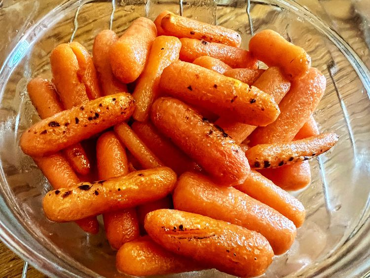

Hot Honey Glazed Carrots
Home

Description:
Ingredients
- Nonstick cooking spray
- 2 tablespoons butter, melted
- 3 tablespoons hot honey
- 1 pound baby carrots
Steps
-
Preheat an air fryer to 400 degrees F (200 degrees C).
Spray the basket with nonstick spray
-
Combine butter and hot honey in a bowl; add carrots and toss to coat.
Place carrots in the air fryer basket, allowing any excess sauce to drip off;
set bowl with remaining sauce aside.
-
Cook in the preheated air fryer, tossing every 7 minutes,
until carrots are roasted and fork-tender, about 15 to 22 minutes.
Toss cooked carrots in reserved sauce.